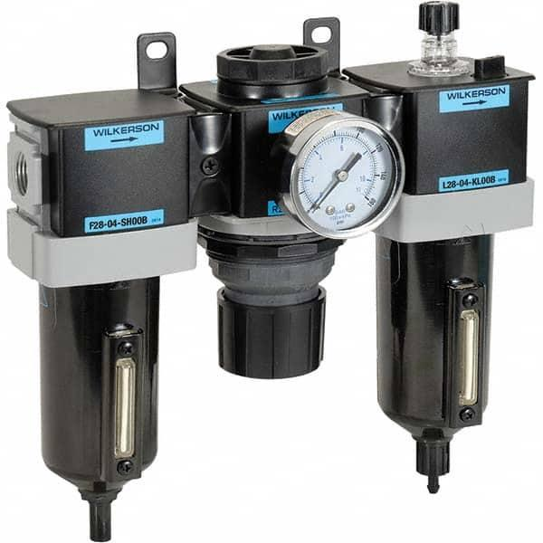
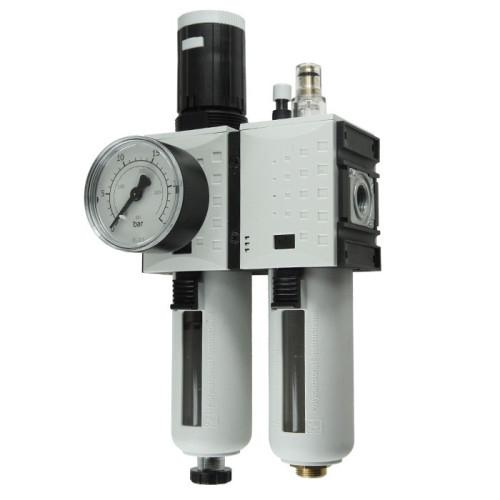
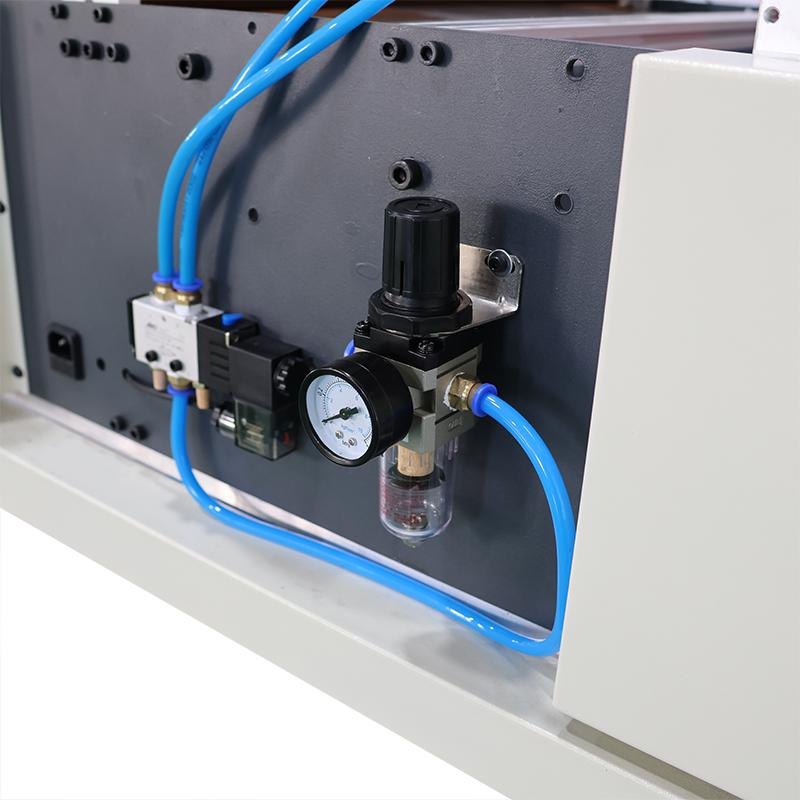

1. Purpose of Pneumatic System Documentation
Pneumatics uses compressed gas, usually air, to generate and control mechanical movement. Industrial machines commonly use pneumatic systems for clamping, part positioning, lifting, gripping, ejecting components, operating fixtures, and controlling valves or other mechanisms.
For machine maintenance, the objective is to document the complete pneumatic system so that its layout, operating pressures, component functions, air supply, actuator movement, and failure modes can be understood without guessing.
A pneumatic machine knowledge base should answer:
- Where does compressed air enter the machine?
- What are the supply pressure and required operating pressure?
- Where are the filter, regulator, lubricator, pressure switch, and isolation valve?
- Which valves control which cylinders, grippers, and actuators?
- Which cylinders are single-acting or double-acting?
- What are the normal actuator positions and sequence of movement?
- Where are pressure gauges, flow controls, silencers, and exhaust ports located?
- Which pneumatic components participate in safety functions?
- How can air pressure be isolated, residual energy released, and the safe state verified before maintenance?
- What are the approved diagnostic, maintenance, and recovery procedures?
Core principle: Pneumatic documentation must connect the air supply, circuit symbols, physical component locations, operating pressures, actuator functions, control signals, and energy-isolation procedure.
2. Basic Pneumatic System Architecture
A typical industrial pneumatic system consists of an air source, air preparation equipment, distribution piping, control valves, actuators, and exhaust arrangements.
Compressed Air Source
↓
Plant Air Distribution
↓
Machine Inlet Isolation Valve
↓
Filter / Regulator / Other Air Preparation
↓
Main Supply Manifold
↓
Directional Control Valves
↓
Flow Controls and Actuators
↓
Exhaust / Silencers
This is a conceptual layout. Actual machines may use multiple pressure zones, separate manifolds, local regulators, vacuum generators, proportional valves, safety exhaust valves, or dedicated air supplies for different functions.
The documented arrangement must match the installed machine. Do not assume every system contains a lubricator or that every actuator receives the same pressure.
3. Compressed Air Supply and Quality
Compressed air is supplied by a compressor system and distributed through plant piping to individual machines. The machine's actual supply quality and pressure depend on the plant network, demand, piping, filters, regulators, leaks, and pressure drops.
Main supply parameters
| Parameter | Meaning | Maintenance importance |
|---|---|---|
| Supply pressure | Pressure available at the machine inlet | Determines whether the machine receives sufficient air |
| Operating pressure | Pressure required by the circuit or device | Must match the approved design and component ratings |
| Pressure drop | Reduction in pressure between two points during flow | May indicate restrictions, undersized piping, clogged filters, or high demand |
| Flow capacity | Volume of air supplied or consumed over time | Affects actuator speed and the ability to operate several devices simultaneously |
| Air quality | Cleanliness, moisture content, and oil contamination where relevant | Affects valve reliability, seals, sensors, and actuator life |
| Dew point | Temperature at which moisture begins to condense under defined pressure conditions | Helps assess condensation risk in the compressed-air system |
| Leakage | Unintended loss of compressed air | Increases energy consumption and may reduce operating pressure |
| Temperature | Air temperature at relevant points | Can influence moisture behavior and component conditions |
A machine may operate correctly when idle but lose pressure when multiple cylinders extend simultaneously. Therefore, a static pressure reading alone does not establish that the air supply has adequate capacity.
Pressure units
Common units include:
- bar
- kilopascal (kPa)
- megapascal (MPa)
- pounds per square inch (psi)
Useful conversions are:
Always record the unit with every pressure value. A value without a unit is incomplete documentation.
4. Gauge Pressure and Absolute Pressure
Industrial pneumatic gauges commonly indicate gauge pressure, which is pressure relative to the surrounding atmospheric pressure.
Absolute pressure is measured relative to a vacuum.
For example, if a gauge reads 6 bar and local atmospheric pressure is approximately 1 bar, the absolute pressure is approximately 7 bar.
This distinction matters in calculations involving gas behavior, vacuum systems, and some component specifications. For routine maintenance, use the pressure reference specified by the manufacturer.
A gauge reading of zero gauge pressure does not always prove that all stored energy has been eliminated. Trapped volumes, isolated branches, accumulators, and mechanically loaded components must be considered separately.
5. Air Preparation Unit: FRL and Related Components
An FRL assembly traditionally consists of a filter, regulator, and lubricator. Not every pneumatic installation requires all three components.



10
Filter
The filter removes specified contaminants from compressed air, depending on the element type and rating.
Maintenance considerations:
- Inspect the filter bowl and element according to the manufacturer's instructions.
- Check for excessive pressure drop.
- Drain condensate through the approved method where applicable.
- Replace elements at the specified interval or condition.
- Verify bowl condition and seals.
- Use components rated for the installed pressure and environment.
A clogged filter may allow normal pressure at low demand but cause a significant pressure drop when actuators operate.
Regulator
A regulator controls downstream pressure within its specified operating range.
Record:
- Manufacturer and model.
- Pressure adjustment range.
- Approved set pressure.
- Actual operating pressure.
- Pressure gauge location.
- Downstream circuit or manifold served.
- Locking or adjustment-control arrangement.
Do not increase the regulator setting simply because a cylinder is moving slowly. The cause may be a restricted exhaust, flow-control setting, leakage, mechanical binding, or inadequate supply capacity.
Lubricator
A lubricator introduces a controlled amount of oil into the air stream when required by the equipment design.
Many modern pneumatic components are designed to operate without additional lubrication. Adding oil to a system that does not require it may cause damage or contamination.
Record whether lubrication is required, the specified lubricant, the relevant downstream components, and the maintenance method. Follow the manufacturer's instructions.
Additional air preparation devices
Depending on the machine, the assembly may also include:
- Soft-start or controlled-pressure build-up valves.
- Safety exhaust valves.
- Pressure switches or pressure sensors.
- Differential-pressure indicators.
- Air-saving control devices.
- Water separators and dryers.
- Local pressure regulators.
- Check valves and isolation valves.
Document the function of each device rather than treating the complete assembly as one generic FRL unit.
6. Pneumatic Circuit Symbols and Drawing Interpretation
Pneumatic drawings use standardized symbols to represent valves, actuators, flow controls, pressure controls, and connections. The drawing describes how the system is intended to function, while the machine layout shows where the physical components are installed.
Common symbol groups include:
- Air supply and exhaust.
- Directional control valves.
- Single-acting and double-acting cylinders.
- Check valves and flow-control valves.
- Pressure regulators and pressure-relief devices.
- Pressure switches and sensors.
- Vacuum generators and suction devices.
- Pneumatic motors and grippers.
- Safety-related pneumatic valves.
Directional control valve notation
Directional valves are often described using the number of ports and the number of switching positions.
For example:
- 3/2 valve: Three ports and two positions.
- 5/2 valve: Five ports and two positions.
- 5/3 valve: Five ports and three positions.
- 2/2 valve: Two ports and two positions.
The first number identifies the ports; the second identifies the positions. The notation does not, by itself, establish whether the valve is electrically operated, manually operated, spring-return, or pneumatically piloted.
Common pneumatic port designations
| Designation | Common function |
|---|---|
| P or 1 | Pressure supply |
| A or 2 | Working port |
| B or 4 | Second working port |
| R or 3 | Exhaust port |
| S or 5 | Second exhaust port |
| 12 or 14 | Pilot connections on some valve conventions |
| 10 | Commonly used for a specific control or pilot-related function on some valves; verify the manufacturer's symbol |
Port numbering conventions depend on the applicable standard and component design. Confirm the valve's markings and datasheet before interpreting unfamiliar numbering.
Reading a pneumatic drawing
- Identify the air supply and isolation points.
- Trace the supply through filters, regulators, and manifolds.
- Identify each directional valve and its normal or de-energized position.
- Trace working ports to the corresponding actuator chambers.
- Identify flow controls, check valves, pressure sensors, and exhaust components.
- Check the electrical or PLC control references for solenoid valves and feedback sensors.
- Identify any safety-related isolation, exhaust, or monitoring arrangement.
- Compare the drawing with the installed circuit and record discrepancies.
A pneumatic schematic is not necessarily a physical layout drawing. Use both documents when locating components in a cabinet or on a machine.
7. Pneumatic Actuators
Pneumatic actuators convert compressed-air energy into mechanical movement.
Common actuator types include:
- Single-acting cylinders.
- Double-acting cylinders.
- Guided cylinders.
- Compact cylinders.
- Rodless cylinders.
- Rotary actuators.
- Pneumatic grippers.
- Air motors.
- Vacuum ejectors and suction devices.
Single-acting cylinder
A single-acting cylinder uses compressed air to produce movement in one direction. A spring or an external force returns the actuator, depending on its design.
Typical applications include simple clamping, ejecting, and positioning mechanisms.
Important checks include return-spring condition, available force, mounting alignment, leakage, and whether the return action is sufficient under the actual load.
Double-acting cylinder
A double-acting cylinder uses compressed air on both sides of the piston to extend and retract the rod.
Typical applications include clamps, slides, stops, transfer mechanisms, and fixtures.
Both directions must be considered when documenting pressure, speed, force, cushioning, and sequence. Extension and retraction may not produce equal force because the piston-rod area reduces the effective area on the rod side.
Cylinder register
| Field | Information to record |
|---|---|
| Actuator ID | Unique cylinder or actuator identifier |
| Manufacturer and model | Exact component identification |
| Type | Single-acting, double-acting, guided, rodless, rotary, or other |
| Bore diameter | Cylinder piston diameter |
| Stroke | Total designed travel |
| Rod diameter | Relevant for force and effective area |
| Mounting | Flange, foot, clevis, guided mount, or other |
| Operating pressure | Approved operating range or setpoint |
| Controlled function | Clamp, eject, lift, position, or other |
| Control valve | Associated directional valve ID |
| Sensors | Retracted, extended, intermediate, or other position sensors |
| Flow controls | Relevant meter-in, meter-out, or other control arrangement |
| Cushioning | Fixed, adjustable, or other specified end cushioning |
| Drawing reference | Circuit and mechanical layout references |
8. Pneumatic Cylinder Force
The theoretical force generated by a pneumatic cylinder depends on pressure and the effective piston area.
Where:
- \(F\) is force in newtons.
- \(P\) is pressure in pascals.
- \(A\) is effective area in square metres.
For a circular piston with bore diameter \(D\):
For the rod-side annular area of a double-acting cylinder:
Here, \(d\) is the piston-rod diameter.
Example calculation
Consider a cylinder with a bore of 50 mm operating at a gauge pressure of 6 bar.
Convert the pressure and diameter:
Piston area:
Theoretical extension force:
The theoretical extension force is approximately 1.18 kN.
Actual available force will be lower because of friction, pressure losses, seal resistance, mechanical geometry, and operating conditions. The retracting force will also differ because of the piston-rod area.
Maintenance application: If a clamp is weak, verify the approved pressure, actual pressure under load, cylinder size, mechanical condition, and valve/flow path before changing settings. Increasing pressure beyond the approved design can create additional crushing hazards and damage equipment.
9. Pressure Zones and Operating Pressure Register
Not every pneumatic device on a machine necessarily operates at the same pressure. Some circuits may have a common supply, while others use local regulators or dedicated pressure-control arrangements.
Examples include:
- Main machine air supply.
- Clamping circuit.
- Gripper circuit.
- Blow-off circuit.
- Vacuum generation.
- Low-pressure sensing or pilot circuits.
- Safety-related pressure-control circuits.
- Special process air supplies.
Pressure register
| Field | Information to record |
|---|---|
| Pressure zone ID | Unique circuit or zone identifier |
| Supply source | Plant supply or dedicated source |
| Inlet pressure | Pressure measured at the machine inlet |
| Regulated pressure | Approved downstream pressure |
| Minimum required pressure | Minimum specified for correct operation |
| Maximum permitted pressure | Limit from the approved design and component ratings |
| Measurement point | Exact gauge, sensor, or test connection |
| Operating condition | Idle, normal cycle, peak demand, or defined test condition |
| Connected equipment | Valves, cylinders, grippers, or other devices served |
| Pressure monitoring | Gauge, switch, transducer, or diagnostic indication |
| Fault threshold | Approved low-pressure or high-pressure alarm setting |
| Drawing reference | Pneumatic schematic and physical layout |
| Test interval | Approved inspection or measurement frequency |
Record both the pressure and the conditions under which it was measured. An inlet pressure measured while the machine is idle may not reveal a restriction that appears during simultaneous actuator operation.
10. Pressure Measurement and Diagnostics
Pressure measurements are useful only when the measurement point, operating condition, instrument range, and units are known.
Typical measurement points
- Machine air inlet.
- Upstream and downstream of the filter.
- Regulator outlet.
- Main manifold.
- Individual pressure zones.
- Actuator supply line.
- Safety valve monitoring points where designed.
- Vacuum circuit measurement points where applicable.
Interpreting pressure differences
| Observation | Possible interpretation |
|---|---|
| Normal inlet pressure, low regulator outlet pressure | Regulator setting, regulator fault, restriction, or demand issue |
| Normal pressure at idle, low pressure during motion | Insufficient supply capacity, pressure drop, restriction, or leakage |
| Normal manifold pressure, weak actuator | Local restriction, flow-control setting, actuator wear, or mechanical load |
| Pressure falls after isolation | Leakage or another connected pressure-loss path; investigate the defined test arrangement |
| Pressure varies rapidly during cycling | Demand fluctuations, regulator response, inadequate piping, or control instability |
| Pressure remains trapped after shutdown | Isolated volume, blocked exhaust, check valve, or other retained-energy condition |
These observations identify possible causes, not definitive diagnoses. Confirm the actual fault through approved measurements and inspection.
Pressure switch versus pressure transducer
A pressure switch changes a discrete output when a defined pressure condition is reached. A pressure transducer produces a continuous measurement signal within its operating range.
A pressure switch may provide a low-pressure permissive or alarm. A transducer may support trend monitoring or pressure control. Their actual function depends on the machine design.
Document the setpoint, hysteresis where relevant, signal type, controller input, alarm behavior, and approved test method.
11. Directional Control Valves
Directional control valves route compressed air to actuators and provide paths for exhaust.
Common actuation methods include:
- Solenoid-operated.
- Pneumatically piloted.
- Mechanically actuated.
- Manually operated.
- Spring-return.
- Detented or bistable.
A solenoid valve may be controlled by a PLC output, but the PLC output state alone does not prove that the valve spool has shifted or that the actuator has moved.
Valve documentation
- Valve ID and manufacturer/model.
- Number of ports and positions.
- Normal or de-energized state.
- Actuation method.
- Coil voltage and connector type.
- PLC output or control signal reference.
- Manual override type, where present.
- Exhaust configuration.
- Associated actuator.
- Position or process feedback.
- Approved spare and replacement information.
Some valves retain their last state, while others return to a spring-defined position when power is removed. The actual behavior depends on the valve design and circuit arrangement.
Manual overrides can cause actuator movement. Use them only under the manufacturer's approved procedure and after the required safety precautions are in place.
12. Pneumatic Flow Controls and Actuator Speed
Actuator speed depends on more than supply pressure. It is affected by flow capacity, valve sizing, tubing length and diameter, exhaust restrictions, load, cushioning, and the actuator's mechanical condition.
Common control arrangements include:
- Meter-in flow control.
- Meter-out flow control.
- One-way flow-control valves.
- Adjustable exhaust restrictors.
- Pressure regulators.
- Proportional flow-control valves.
A one-way flow-control valve commonly allows relatively free flow in one direction and restricts flow in the other. Its orientation determines which actuator movement is affected.
Meter-in versus meter-out
| Method | General principle | Important consideration |
|---|---|---|
| Meter-in | Restricts incoming air flow to the actuator | May be suitable for some loads but can be less stable with overrunning loads |
| Meter-out | Restricts exhaust flow from the actuator | Often provides better control for many pneumatic cylinder applications |
| Bidirectional restriction | Restricts flow in both directions | Can affect both extension and retraction speed |
| Proportional flow control | Controls flow according to a control signal | Requires compatible control hardware and configuration |
The correct arrangement depends on the actuator, load, circuit, and manufacturer's instructions. Do not adjust flow controls without recording the original setting when the procedure requires it.
If movement becomes slow, inspect the full path: supply pressure, valve operation, flow-control orientation and setting, exhaust restriction, actuator condition, and mechanical load.
13. Pneumatic Tubing, Fittings, and Manifolds
Tubing and fittings determine how compressed air reaches the components. Undersized tubing, long routes, damaged fittings, and excessive restrictions can produce pressure drops during operation.
Document:
- Tubing material and outside diameter.
- Pressure and temperature ratings.
- Fitting type and size.
- Connection and port identifiers.
- Cable or tubing labels.
- Routing and mechanical protection.
- Manifold identification and valve positions.
- Supply and exhaust connections.
- Approved replacement specifications.
Common fitting types include push-in fittings, threaded fittings, bulkhead fittings, unions, and manifold connections. Compatibility must be checked for the tube material, dimensions, pressure rating, media, and environmental conditions.
Do not assume a fitting is suitable merely because it can be physically inserted into the tube.
14. Pneumatic Leakage and Energy Consumption
Compressed-air leakage wastes energy and can reduce available pressure. Small leaks may become significant when they occur across many machines or remain present continuously.
Potential leak points include:
- Push-in fittings.
- Threaded connections.
- Damaged tubing.
- Cylinder rod seals.
- Valve seals.
- Manifold joints.
- Filter bowls and seals.
- Quick couplings.
- Pressure regulators.
- Exhaust paths.
Leakage investigation
- Identify the affected circuit and operating condition.
- Follow the site's approved leak-detection method.
- Inspect accessible connections and tubing.
- Check for cylinder or valve leakage according to the manufacturer's procedure.
- Repair or replace defective parts using approved components.
- Verify the result under the relevant operating condition.
- Record recurring leaks and their root causes.
Do not use hands to search for pressurized leaks. Follow the approved method and required protective measures. Never tighten or disconnect a pressurized fitting unless the procedure specifically permits the action and appropriate safeguards are in place.
15. Exhaust, Silencers, and Residual Pressure
Pneumatic systems discharge air through valve exhaust ports or dedicated exhaust devices. Silencers reduce exhaust noise, but they can become contaminated or restricted.
A restricted exhaust may slow movement, change actuator behavior, or prevent pressure from being released as intended.
Document:
- Exhaust port and valve association.
- Silencer model and location.
- Exhaust routing.
- Any shared exhaust arrangement.
- Inspection and replacement criteria.
- Safety exhaust valve and monitoring details where applicable.
- Residual-pressure hazards and isolation procedure.
Never assume that closing the main supply valve has depressurized every branch. Check valves, closed-center valves, blocked exhaust paths, and isolated actuator chambers may retain pressure.
Before maintenance, isolate the supply, release stored pressure using the approved procedure, verify the required safe state, and account for mechanical energy that compressed air may have stored in the machine.
16. Pneumatic Sensors and Feedback
Pneumatic systems often rely on electrical sensors to confirm actuator positions or pressure conditions. The PLC uses these signals to coordinate the machine sequence and detect incomplete movement.
Common devices include:
- Magnetic cylinder position sensors.
- Inductive proximity sensors for mechanism position.
- Pressure switches.
- Pressure transducers.
- Vacuum switches.
- Flow-monitoring devices where fitted.
- Valve position feedback devices on supported equipment.
Cylinder position sensing
A cylinder may have a retracted sensor and an extended sensor. These signals help confirm that the actuator has reached its expected position.
For example:
PLC Output
↓
Solenoid Valve
↓
Cylinder Extends
↓
Extended Position Sensor
↓
PLC Input
↓
Sequence Permissive for Next Operation
This is a simplified control sequence. Actual machines may use timeouts, additional permissives, safety conditions, or other feedback.
Sensor register
| Field | Information to record |
|---|---|
| Sensor ID | Unique device identifier |
| Associated actuator | Cylinder, gripper, or mechanism |
| Function | Retracted, extended, pressure OK, vacuum OK, or other |
| Manufacturer and model | Exact part number |
| Sensor type | Magnetic, inductive, pressure switch, or other |
| Supply voltage | Specified operating voltage |
| Output type | PNP, NPN, relay, analog, or other |
| PLC input | Rack, module, channel, and tag reference |
| Normal condition | Expected signal state in the defined condition |
| Diagnostic indication | LED or controller diagnostic |
| Drawing reference | Electrical and pneumatic drawing references |
Do not assume that a sensor's illuminated LED proves that the PLC receives the correct signal. Check the sensor output, wiring, input channel, and actual control logic using approved diagnostics.
17. Vacuum Systems and Pneumatic Grippers
Vacuum systems are used for part handling, suction gripping, sheet transfer, packaging, and other applications where mechanical gripping is unsuitable.
A typical vacuum system may include:
Compressed Air
↓
Vacuum Ejector
↓
Vacuum Line
↓
Suction Cup or Gripper
↓
Workpiece Handling
↓
Vacuum Sensor / Pressure Monitoring
The exact arrangement may also include vacuum reservoirs, check valves, blow-off valves, filters, and energy-saving controls.
Important parameters
- Compressed-air supply pressure.
- Vacuum level and measurement reference.
- Ejector capacity.
- Suction-cup size and material.
- Workpiece surface condition.
- Leakage and vacuum build-up time.
- Vacuum switch threshold.
- Release or blow-off behavior.
- Permitted workpiece weight and acceleration.
- Safe response to vacuum loss.
Vacuum pressure is commonly expressed relative to atmospheric pressure. Ensure the measurement convention is understood before comparing values.
A vacuum switch confirms a configured threshold, not necessarily that the workpiece is securely held under every operating condition. Validate the gripping arrangement for the actual workpiece, motion profile, and failure consequences.
Where loss of vacuum could cause a dropped load or injury, the risk assessment may require additional protective measures such as load retention, monitoring, controlled motion, or mechanical support.
18. Pneumatic Safety and Isolation
Compressed air can move actuators unexpectedly, eject components, or release stored energy. A machine that has stopped moving is not automatically safe to service.
Pneumatic safety arrangements may include:
- Lockable supply isolation valves.
- Controlled pressure-release devices.
- Safety exhaust valves.
- Pressure monitoring.
- Valve feedback monitoring.
- Mechanical supports or blocking devices.
- Interlocked guards and access controls.
Isolation principles
Before maintenance:
- Identify all relevant pneumatic supplies and isolated pressure zones.
- Follow the approved shutdown and isolation procedure.
- Apply the required lockout/tagout controls.
- Release or control stored pressure using the specified method.
- Verify the required pressure state at the designated test points.
- Account for check valves, accumulators, trapped volumes, gravity, and mechanical loads.
- Confirm that the equipment cannot move unexpectedly before work begins.
The exact procedure depends on the circuit and machine design. Do not rely on an HMI status, solenoid LED, or closed supply valve as the only proof that the equipment is safe.
Safety-related pneumatic valves
A safety exhaust valve may be designed to remove pressure when a safety demand occurs. Some devices also monitor their internal state or provide feedback to the safety controller.
Document the safety function, valve model, control arrangement, feedback, exhaust path, fault response, and required validation.
A conventional directional valve is not automatically a safety-rated valve. Safety suitability depends on the device's intended use, certified characteristics where required, circuit architecture, and validated application.
19. Pneumatic Maintenance and Preventive Inspection
Preventive maintenance should be based on manufacturer recommendations, operating conditions, failure history, and the approved plant maintenance plan.
Routine inspection checklist
- Check machine inlet pressure against the approved range.
- Check regulator settings and pressure gauges.
- Inspect filter elements and condensate arrangements.
- Check tubing, fittings, and accessible connections for damage.
- Investigate air leakage using the approved method.
- Inspect cylinders for damage, abnormal movement, and leakage.
- Check valve manifolds, solenoid indicators, and connectors.
- Inspect flow controls and silencers.
- Verify position and pressure sensor operation.
- Review repeated low-pressure and actuator timeout faults.
- Inspect safety-related pneumatic devices according to the approved procedure.
- Confirm configuration and replacement records are current.
Do not adjust every regulator, flow control, or cushioning screw during routine maintenance. Change settings only when required by an approved procedure, and record the original and final values when applicable.
20. Common Pneumatic Faults and Troubleshooting
| Symptom | Possible causes | Diagnostic approach |
|---|---|---|
| Cylinder does not move | No air supply, valve fault, blocked path, mechanical jam, or control signal missing | Verify supply, valve command and diagnostics, actuator path, and mechanical condition |
| Cylinder extends slowly | Low pressure under load, restricted supply, flow-control setting, exhaust restriction, or wear | Measure pressure during movement and inspect the complete flow path |
| Cylinder retracts slowly | Rod-side restriction, incorrect flow-control orientation, low pressure, or mechanical resistance | Compare both directions and check the relevant ports and controls |
| Cylinder does not reach end position | Insufficient stroke, obstruction, incorrect sensor position, or inadequate force | Inspect mechanical travel, actuator sizing, and position feedback |
| Repeated timeout alarm | Slow movement, inconsistent supply, sensor fault, or incorrect sequence conditions | Compare actual movement time, sensor status, and PLC diagnostics |
| Clamp force is weak | Incorrect pressure, leakage, worn seals, poor linkage geometry, or excessive load | Verify pressure under load and inspect the actuator and mechanism |
| Pressure falls during cycling | Insufficient supply capacity, restriction, leakage, or excessive simultaneous demand | Compare inlet and downstream pressures during the fault |
| Continuous exhaust noise | Leakage, valve spool issue, seal failure, or normal exhaust being mistaken for a fault | Identify the source and compare with the circuit design |
| Solenoid energizes but actuator does not move | Valve spool fault, missing supply, blocked exhaust, or actuator problem | Check valve diagnostics and approved pressure measurements |
| Position sensor does not change | Misalignment, failed sensor, wiring issue, or actuator not reaching position | Compare physical position, sensor LED, electrical signal, and PLC input |
| Vacuum does not build | Insufficient supply, ejector fault, suction leakage, blocked filter, or damaged cup | Check supply pressure, vacuum generation, filters, seals, and workpiece contact |
| Safety exhaust valve fault | Supply or monitoring issue, valve fault, or feedback discrepancy | Follow the approved safety diagnostic and isolation procedure |
21. Practical Case: Cylinder Moves Slowly Only During Production
Suppose a fixture cylinder operates normally during individual testing but moves slowly when the automatic cycle is running.
A useful investigation is:
- Measure the machine inlet pressure during the affected cycle.
- Measure the pressure downstream of the regulator under the same conditions.
- Compare pressure at the relevant manifold or actuator supply point.
- Identify other actuators operating at the same time.
- Inspect the filter, tubing size, fittings, and any restrictions.
- Check the flow-control and exhaust arrangements.
- Inspect for leakage and mechanical binding.
- Compare the measured movement time with the approved sequence specification.
If pressure drops at the machine inlet, the issue may involve the plant supply or distribution system. If inlet pressure remains stable but manifold pressure falls, investigate the machine's internal distribution and flow capacity.
Do not immediately increase regulator pressure. The real issue may be inadequate flow capacity, an obstructed filter, a restricted fitting, or excessive simultaneous air demand.
22. Practical Case: PLC Output Is ON but the Cylinder Does Not Extend
A PLC output being ON does not prove that the cylinder is receiving sufficient air or that the valve has shifted.
Investigate the complete chain:
PLC Command
↓
Output Module
↓
Solenoid Coil and Connector
↓
Directional Valve
↓
Air Supply and Working Port
↓
Cylinder Movement
↓
Position Sensor
↓
PLC Input Feedback
Check the following using approved procedures:
- Is the output command correct for the intended sequence?
- Is the output module operating as expected?
- Is the correct voltage present at the solenoid interface?
- Is the valve receiving the required supply pressure?
- Is the valve's actual state consistent with its design?
- Is the cylinder mechanically free to move?
- Is the relevant flow-control path unobstructed?
- Does the position sensor change state?
- Is the PLC receiving the sensor signal correctly?
This separates an electrical control fault from a valve fault, pressure problem, mechanical obstruction, or feedback fault.
23. Pneumatic Energy Efficiency
Compressed air is an energy-intensive utility. Leakage, excessive pressure, poor sequencing, and inefficient blow-off arrangements can increase energy consumption.
Useful improvement opportunities include:
- Repairing persistent leaks.
- Using only the pressure required by the validated application.
- Reducing unnecessary air consumption during idle periods.
- Optimizing cylinder sizing and flow-control arrangements through engineering review.
- Reviewing simultaneous actuator demand.
- Using suitable vacuum-generation and blow-off controls.
- Monitoring pressure trends and recurring low-pressure alarms.
- Maintaining filters and regulators.
- Recording air-consumption improvements where measurement is available.
Pressure reduction must not compromise required clamping force, process quality, cycle reliability, or validated safety functions. Any change that affects the machine's operating characteristics requires the appropriate engineering assessment.
24. Pneumatic Spares and Obsolescence
Maintain a controlled spare-parts register for critical pneumatic components.
| Component | Key identification details | Replacement considerations |
|---|---|---|
| Cylinder | Bore, stroke, mounting, rod, cushioning | Force, travel, alignment, and mounting compatibility |
| Directional valve | Port configuration, actuation, flow capacity, voltage | Porting, normal state, response, and circuit compatibility |
| Solenoid coil | Voltage, power, connector, duty rating | Electrical and thermal compatibility |
| Filter | Port size, filtration rating, flow capacity | Pressure drop, bowl type, and contamination requirements |
| Regulator | Pressure range, flow capacity, port size | Required pressure stability and downstream application |
| Flow control | Port size, flow range, directional behavior | Speed-control range and orientation |
| Pressure switch | Range, setpoint, output, connection | Switching behavior and electrical interface |
| Pressure transducer | Range, output type, accuracy, connection | Measurement range and PLC signal compatibility |
| Safety exhaust valve | Safety suitability, flow, pressure, monitoring | Certified application, control compatibility, and validation |
| Vacuum ejector | Supply requirements, vacuum capacity, port arrangement | Gripping performance and air-consumption requirements |
Do not replace a component solely because the thread size or external dimensions match. Pressure ratings, flow capacity, porting, seals, operating conditions, and safety suitability must also be verified.
25. Pneumatic Machine Knowledge Base Deliverables
A complete machine record should contain the following controlled documents.
Pneumatic layout drawing
- Machine air inlet and isolation point.
- Filter, regulator, and air preparation components.
- Main manifolds and distribution branches.
- Valve islands and individual valves.
- Cylinders, grippers, and other actuators.
- Pressure sensors, switches, and gauges.
- Exhaust routes and silencers.
- Safety-related pneumatic devices.
- Physical locations and device identifiers.
Pneumatic circuit drawing
- Standardized component symbols.
- Port and connection identification.
- Supply and exhaust paths.
- Directional valve states.
- Actuator chamber connections.
- Flow-control and pressure-control components.
- Electrical or PLC control references where relevant.
- Safety function references.
- Drawing revision and approval details.
Pressure register
- Machine inlet pressure.
- Pressure zones and regulator settings.
- Minimum and maximum approved operating values.
- Measurement points.
- Pressure monitoring and alarm settings.
- Test conditions and results.
- Approved measurement and maintenance intervals.
Device register
- Component IDs, models, and manufacturers.
- Actuator bore, stroke, and mounting information.
- Valve port configuration and coil specifications.
- Sensor types and controller references.
- Spare-part numbers and approved replacements.
- Configuration, drawing, and test-procedure references.
26. Final Acceptance Checklist
- The compressed-air supply and machine isolation points are documented.
- The pneumatic layout matches the installed machine.
- The pneumatic circuit drawings are current.
- All important cylinders, valves, grippers, and sensors are identified.
- Pressure zones, regulator settings, and measurement points are recorded.
- Operating pressure values include units and defined conditions.
- Flow controls, exhaust paths, and silencers are documented.
- PLC outputs and feedback inputs are mapped to the relevant devices.
- Safety-related pneumatic components and their functions are identified.
- Residual-pressure hazards and isolation procedures are documented.
- Common fault symptoms and approved diagnostic methods are available.
- Critical spares and replacement requirements are recorded.
- Maintenance and functional-test records are controlled.
- Changes are approved, verified, and reflected in the drawings.
27. Interview and Practical Knowledge Questions
- What is the purpose of an FRL unit?
- What is the difference between supply pressure and operating pressure?
- Why can a cylinder operate correctly at idle but move slowly during automatic production?
- What is the difference between a single-acting and a double-acting cylinder?
- How is theoretical pneumatic cylinder force calculated?
- Why are extension and retraction forces different in a double-acting cylinder?
- What is the difference between a 5/2 valve and a 5/3 valve?
- What is the difference between meter-in and meter-out flow control?
- Why does a successful PLC output command not guarantee cylinder movement?
- What is the difference between a pressure switch and a pressure transducer?
- Why can a cylinder remain pressurized after the machine's main air supply is isolated?
- What is the purpose of a safety exhaust valve?
- How would you investigate a cylinder that fails to reach its extended position?
- What causes pressure to drop when multiple pneumatic actuators operate simultaneously?
- What information should be recorded before replacing a pneumatic valve or cylinder?
- Why must regulator pressure not be increased simply to correct slow movement?
- What is the difference between gauge pressure and absolute pressure?
- How would you identify the root cause of continuous pneumatic exhaust noise?
The goal is to maintain a pneumatic system record that links the physical layout, circuit logic, operating pressure, device specifications, control signals, safety arrangements, and maintenance procedures. With those records in place, pneumatic faults can be investigated systematically rather than corrected through repeated, unverified adjustments.
NEXT TOPIC
02_PLAN_WISE_2026\02_INDUSTRY3_0\28_Machine_KB\01_Template\03_Field_Devices\07_Hydraulics - Hydraulics: Circuit and pressures